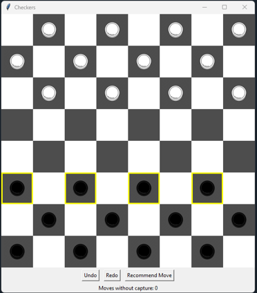

- Checkers can be challenging for beginners and they may struggle to make optimal moves. We want to give those players a tool that allows them to see what checkers looks like when played optimally so they can learn the game quickly.
Checkers Coach provides a coaching functionality that recommends optimal moves, with the goal of helping players improve their strategic understanding of the game.
- Built with tkinter, the GUI provides a clear visual representation of the gamestate. It also highlights all potential moves and, once the recommendation button is hit, will highlight what the algorithm has determined is the best place for the player to move as well as highlight the space to move it. The undo, redo, and recommendation buttons are displayed below the board as well as a counter for how many moves have been played without a piece being captured.
and our average wait time and table check-up time data can be used as specific training points.
- Language/Liabries used to develop the Checkers Coach:
Python, collections, random, typing, copy, tkinter, Pillow, enum.
- Muhammad Sayed Mahdy's Checkers Implementation providede the Checkers game GUI, and theAdverstial AI
- Team members: Johnathon Nelson, Daniel Vaca